<!DOCTYPE lake>
<h2 data-lake-id="PZSFW" id="PZSFW"><span data-lake-id="ucf3288da" id="ucf3288da">学习目标</span></h2><ol list="ud9a15290"><li data-lake-id="u4442ed9a" fid="u58164bac" id="u4442ed9a"><span data-lake-id="ub1e6b616" id="ub1e6b616">掌握STC8H最小板设计</span></li><li data-lake-id="u38a0ecae" fid="u58164bac" id="u38a0ecae"><span data-lake-id="u5f4e4ca0" id="u5f4e4ca0">熟悉查阅芯片手册</span></li><li data-lake-id="u8417f5ba" fid="u58164bac" id="u8417f5ba"><span data-lake-id="ue407f950" id="ue407f950">熟悉串口芯片外围电路</span></li></ol><h2 data-lake-id="ubtbj" id="ubtbj"><span data-lake-id="u71af227d" id="u71af227d">学习内容</span></h2><h3 data-lake-id="zNTXZ" id="zNTXZ"><span data-lake-id="u2cd0cb4d" id="u2cd0cb4d">EDA软件下载</span></h3><p data-lake-id="u1b5e06fb" id="u1b5e06fb"><span data-lake-id="u0eb4bb89" id="u0eb4bb89">打开链接 : </span><a data-lake-id="u4a709a0a" href="https://lceda.cn/page/download" id="u4a709a0a" rel="noopener noreferrer" target="_blank"><span data-lake-id="ub7f597c2" id="ub7f597c2">https://lceda.cn/page/download</span></a></p><p data-lake-id="ufb31bca9" id="ufb31bca9"><span data-lake-id="ue8c1570e" id="ue8c1570e">选择</span><strong><span data-lake-id="u3fb8214c" id="u3fb8214c">嘉立创EDA专业版</span></strong><span class="lake-fontsize-11" data-lake-id="udd189cb6" id="udd189cb6" style="color: rgb(51, 51, 51)">Windows10及以上(x64)</span></p><p data-lake-id="u09f99fd8" id="u09f99fd8">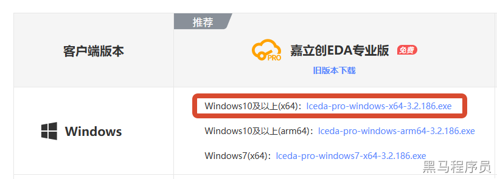</p><p data-lake-id="uafebffec" id="uafebffec"><span data-lake-id="u31f4746e" id="u31f4746e">下载激活文件</span></p><p data-lake-id="u6d4e2806" id="u6d4e2806">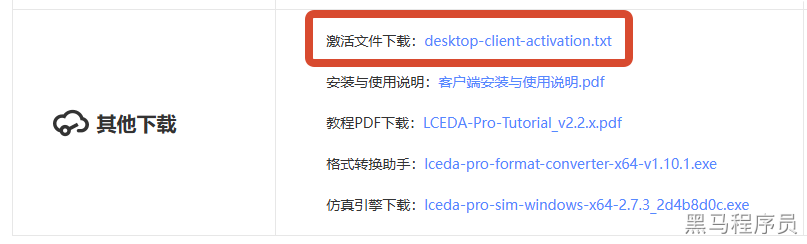</p><p data-lake-id="ua0136da9" id="ua0136da9">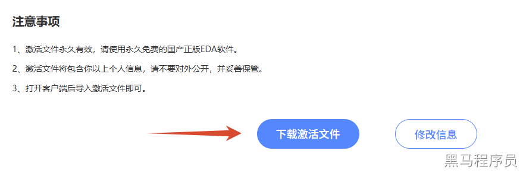</p><p data-lake-id="uf9637c01" id="uf9637c01"><strong><span data-lake-id="u4923ff33" id="u4923ff33">​</span></strong><br/></p><h3 data-lake-id="mawBR" id="mawBR"><span data-lake-id="u3739955f" id="u3739955f">PCB设计流程</span></h3><ol list="ue394e177"><li data-lake-id="ube0c77f9" fid="uc95c9ac8" id="ube0c77f9"><span data-lake-id="u39a63cda" id="u39a63cda">原理图设计</span></li></ol><p data-lake-id="uf9d10a70" id="uf9d10a70" style="padding-left: 2em"><span data-lake-id="u81ef132c" id="u81ef132c">根据电路的功能要求，进行电路图的设计和修改，确定电路的功能和连接方式。</span></p><ol list="ue394e177" start="2"><li data-lake-id="ub5725087" fid="uc95c9ac8" id="ub5725087"><span data-lake-id="uf2b9e142" id="uf2b9e142">PCB布局布线(PCB Layout)</span></li></ol><p data-lake-id="u1f653918" id="u1f653918" style="padding-left: 2em"><span data-lake-id="udccc213b" id="udccc213b">将设计好的原理图，进行合理布局摆放，然后进行连线。</span></p><ol list="ue394e177" start="3"><li data-lake-id="uee281b46" fid="uc95c9ac8" id="uee281b46"><span data-lake-id="u1a359fc1" id="u1a359fc1">检查设计优化</span></li></ol><p data-lake-id="u5a8b8531" id="u5a8b8531" style="padding-left: 2em"><span data-lake-id="u3b36c46d" id="u3b36c46d">对原理图设计进行优化，对布局走线进行优化</span></p><ol list="ue394e177" start="4"><li data-lake-id="u0b283871" fid="uc95c9ac8" id="u0b283871"><span data-lake-id="ub8aaa272" id="ub8aaa272">PCB打样</span></li></ol><p data-lake-id="uc23cd521" id="uc23cd521" style="padding-left: 2em"><span data-lake-id="u328e7ef5" id="u328e7ef5">将设计好的PCB板下单，交给工厂进行生产</span></p><ol list="ue2559219" start="5"><li data-lake-id="u358dbf97" fid="u5ff7acb2" id="u358dbf97"><span data-lake-id="ufb16bc08" id="ufb16bc08">开发板验证</span></li></ol><p data-lake-id="u440b6e48" id="u440b6e48" style="padding-left: 2em"><span data-lake-id="ud97a33a6" id="ud97a33a6">拿到生产好已经贴片完成的PCB板，进行程序的烧录验证。</span></p><h3 data-lake-id="y0zQZ" id="y0zQZ"><span data-lake-id="u3014cf81" id="u3014cf81">原理图设计</span></h3><p data-lake-id="u8fccc77e" id="u8fccc77e"><span data-lake-id="u9d83fa50" id="u9d83fa50">原理图设计是电子产品设计的第一步，主要是通过符号和连接线的方式表达电路的结构和连接方式。原理图设计的主要任务包括：</span></p><ol list="uc45bb2f7"><li data-lake-id="u2475b034" fid="ud399cec2" id="u2475b034"><span data-lake-id="u90b8c42a" id="u90b8c42a">电路功能分析和设计：了解所需的电路功能，并将其分解为基本的电路模块，再对每个电路模块进行详细设计。</span></li><li data-lake-id="u1c45b567" fid="ud399cec2" id="u1c45b567"><span data-lake-id="u501e623f" id="u501e623f">电路符号设计：选择电子元器件的符号，并按照电路连接关系进行布置。</span></li><li data-lake-id="uf73e504e" fid="ud399cec2" id="uf73e504e"><span data-lake-id="u1a50f664" id="u1a50f664">电路连接设计：根据电路功能和电路符号，将各个电子元器件之间的连接关系绘制出来。</span></li><li data-lake-id="u0720899a" fid="ud399cec2" id="u0720899a"><span data-lake-id="ue9355ad5" id="ue9355ad5">标号和标识设计：对各个电子元器件进行编号、标识，方便后续的布板、生产和维修。</span></li><li data-lake-id="u8c4daef5" fid="ud399cec2" id="u8c4daef5"><span data-lake-id="u47142cb4" id="u47142cb4">电路模拟和验证：通过模拟软件对电路进行仿真和验证，确保电路的正确性和稳定性。</span></li></ol><p data-lake-id="u2d598c92" id="u2d598c92"><span data-lake-id="u5dd96a9e" id="u5dd96a9e">通过原理图设计，可以清晰地了解电路结构、功能、元器件型号和参数等信息，为后续的PCB布局和生产提供重要的依据。</span></p><h3 data-lake-id="gyD25" id="gyD25"><span data-lake-id="u47f66e35" id="u47f66e35">PCB Layout</span></h3><p data-lake-id="u2b4a47d8" id="u2b4a47d8"><span data-lake-id="u7ca39ca1" id="u7ca39ca1">PCB布局和布线是将原理图转换为实际PCB的过程。在这个过程中，需要完成以下任务：</span></p><ol list="u3e6a33a9"><li data-lake-id="u342c588b" fid="uc1cf0d47" id="u342c588b"><span data-lake-id="uddd73951" id="uddd73951">将所有电路元件放置到PCB板上，按照原理图的连接方式确定元件的位置，以保证信号的传输和电路的稳定性。</span></li><li data-lake-id="u94be2413" fid="uc1cf0d47" id="u94be2413"><span data-lake-id="u1b69746e" id="u1b69746e">根据元件的位置和信号线的走向，设计合适的电路布局。电路布局是指在PCB板上规划元件位置和信号线走向，以最小化信号线的长度、交叉和干扰，保证电路的性能和稳定性。</span></li><li data-lake-id="u3309e999" fid="uc1cf0d47" id="u3309e999"><span data-lake-id="ucfc4be4a" id="ucfc4be4a">进行PCB布线，将电路元件之间的信号线连接起来。在布线过程中需要考虑信号线的长度、走向、宽度、厚度、阻抗匹配、信号完整性等因素，以最小化信号噪声、串扰和延迟。</span></li><li data-lake-id="u6f2aa0f2" fid="uc1cf0d47" id="u6f2aa0f2"><span data-lake-id="u491c0060" id="u491c0060">添加必要的信号层、电源层和地层。为了减小信号线之间的干扰和串扰，常常需要采用多层PCB设计。在PCB设计中常常包括顶层、底层、信号层、电源层和地层等层次。</span></li><li data-lake-id="u4ae55953" fid="uc1cf0d47" id="u4ae55953"><span data-lake-id="u3270f5d1" id="u3270f5d1">完成PCB板的布局和布线后，需要进行电气规则检查（ERC）和信号完整性检查（SI）等工作，以确保电路的正确性和可靠性。</span></li></ol><p data-lake-id="u939ff6a7" id="u939ff6a7"><span data-lake-id="u9800ca3a" id="u9800ca3a">最后，将设计好的PCB板制作成实物，并进行测试和调试，确保电路的性能和可靠性。</span></p><p data-lake-id="u18d755d3" id="u18d755d3"><span data-lake-id="u2082fc79" id="u2082fc79">​</span><br/></p><p data-lake-id="ub3c2aa06" id="ub3c2aa06"><span data-lake-id="ub3057a0f" id="ub3057a0f">总之，PCB布局和布线是PCB设计中非常重要的环节，它直接关系到电路的性能和可靠性。在设计中需要综合考虑电路的复杂性、元器件的种类和特性、信号传输的特点等因素，以实现最佳的电路性能和可靠性。</span></p><p data-lake-id="u78f648a0" id="u78f648a0"><span data-lake-id="u9d433eb2" id="u9d433eb2">推荐使用芯片型号: STC8H8K64U-45I-TSSOP20</span></p><h3 data-lake-id="dCQJ8" id="dCQJ8"><span data-lake-id="u589956a1" id="u589956a1">最小系统参考</span></h3><ol list="u1b2eec97"><li data-lake-id="u14616421" fid="u74a2e263" id="u14616421"><span data-lake-id="uc6d6d39d" id="uc6d6d39d">串口烧录方案参考</span></li></ol><p data-lake-id="ufd23eed0" id="ufd23eed0" style="padding-left: 2em">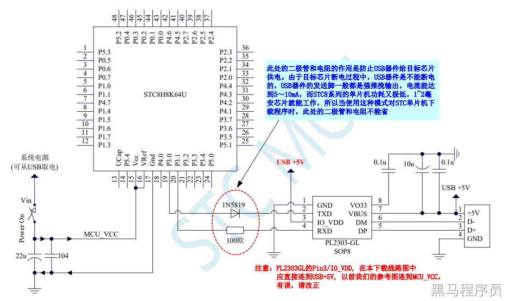</p><ol list="u999179cc" start="2"><li data-lake-id="uc516bb5e" fid="u805274ea" id="uc516bb5e"><span data-lake-id="u143dbc77" id="u143dbc77">USB烧录方案参考</span></li></ol><p data-lake-id="udff8522b" id="udff8522b" style="padding-left: 2em">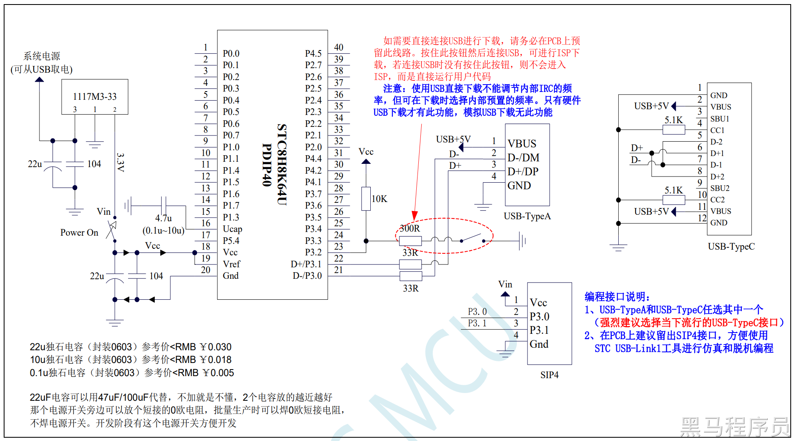</p><p data-lake-id="ue91cb4e5" id="ue91cb4e5" style="padding-left: 2em"><br/></p><p data-lake-id="ue65e9a90" id="ue65e9a90"><span data-lake-id="u30316d5f" id="u30316d5f">ISP（In-System Programming）：在系统编程，指的是通过编程接口或通信接口（如USB、UART等）将程序下载到嵌入式系统的内部存储器（如微控制器或FPGA）中，而无需将芯片从电路板上拆下来。</span></p><p data-lake-id="u15242c5f" id="u15242c5f"><span data-lake-id="u70739229" id="u70739229">​</span><br/></p><p data-lake-id="ude522116" id="ude522116"><span data-lake-id="ua3f059c5" id="ua3f059c5">IAP（In-Application Programming）：在应用编程，指的是在嵌入式系统运行时，通过特定的机制或协议来更新或下载程序，通常是通过网络连接或外部存储介质。\</span></p><p data-lake-id="ufc4560c5" id="ufc4560c5"><span data-lake-id="u3eed42c7" id="u3eed42c7">​</span><br/></p><h3 data-lake-id="xGyxp" id="xGyxp"><span data-lake-id="u9760ff81" id="u9760ff81">串口芯片</span></h3><p data-lake-id="u7fc3d103" id="u7fc3d103"><span data-lake-id="u65af0445" id="u65af0445">USB串口芯片是一种集成了USB接口和串口通信功能的芯片，主要用于将串口设备连接到计算机或其他USB主机设备上。相对于传统的串口芯片，USB串口芯片具有更高的数据传输速率和更广泛的应用范围。</span></p><p data-lake-id="u7dd58117" id="u7dd58117"><span data-lake-id="u6c40f6fd" id="u6c40f6fd">USB串口芯片通常包括以下主要组件：</span></p><ul list="ua349277b"><li data-lake-id="u8691c8ca" fid="u3b3b2196" id="u8691c8ca"><span data-lake-id="ueafe8b23" id="ueafe8b23">USB接口控制器：用于管理芯片与USB主机的通信，包括接收和处理USB传输的数据包等。</span></li><li data-lake-id="u8919fb64" fid="u3b3b2196" id="u8919fb64"><span data-lake-id="u8bee48a4" id="u8bee48a4">串口控制器：用于管理串口的通信，包括波特率、数据位、停止位等参数的设置，以及数据的发送和接收等。</span></li><li data-lake-id="u98a8a8c7" fid="u3b3b2196" id="u98a8a8c7"><span data-lake-id="ud72104a7" id="ud72104a7">数据缓冲区：用于存储数据，以平衡USB主机和串口设备之间的数据传输速率，以及缓存数据以避免数据丢失或冲突。</span></li></ul><p data-lake-id="ue3cf59a1" id="ue3cf59a1"><span data-lake-id="u285fea7d" id="u285fea7d">常见的USB串口芯片有CH340、FT232、PL2303等，这些芯片通常需要与主控芯片或单片机结合使用，以实现串口通信功能。</span></p><p data-lake-id="u75ff2dab" id="u75ff2dab"><span data-lake-id="u8aeede22" id="u8aeede22">CH340串口芯片5V供电电路:</span></p><p data-lake-id="uf5131efe" id="uf5131efe">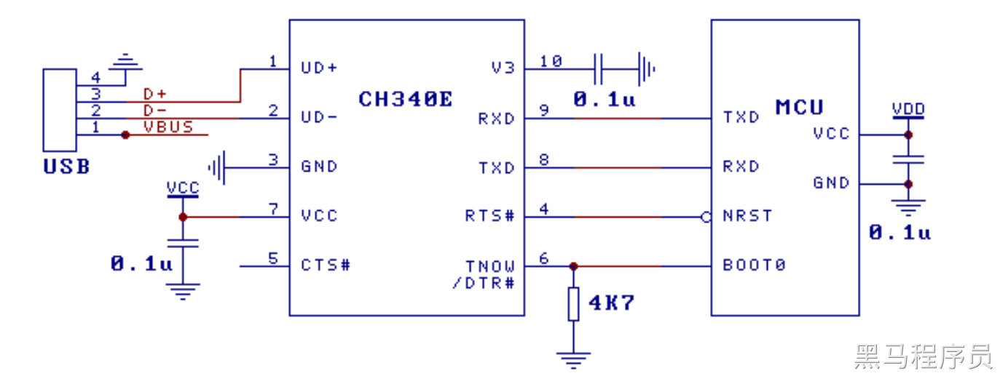</p><p data-lake-id="ue058e83e" id="ue058e83e"><span data-lake-id="uedd94b50" id="uedd94b50">CH340串口芯片3V3供电电路(不稳定, 不推荐):</span></p><p data-lake-id="uf6a37871" id="uf6a37871">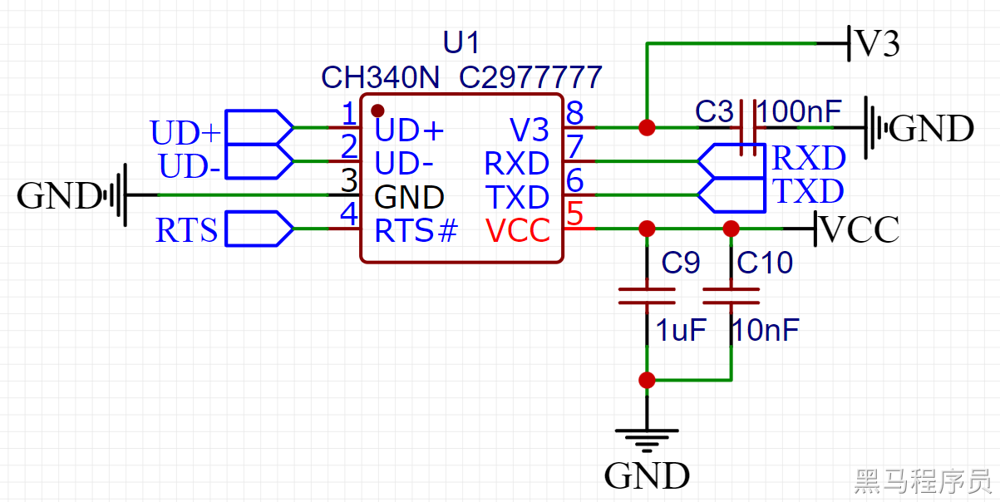</p><p data-lake-id="u5ba1f29c" id="u5ba1f29c"><span data-lake-id="uaeb22bfe" id="uaeb22bfe">CH340串口芯片5V供电电路(推荐):</span></p><p data-lake-id="u65eff702" id="u65eff702">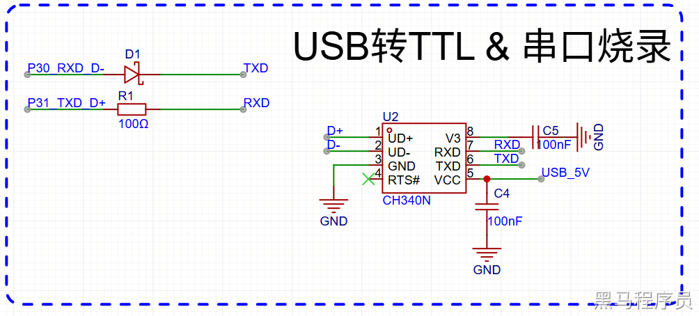</p><h3 data-lake-id="NClyO" id="NClyO"><span data-lake-id="ueeaff26e" id="ueeaff26e">线性稳压器LDO</span></h3><p data-lake-id="u85b28dae" id="u85b28dae"><span data-lake-id="u549c1fef" id="u549c1fef">线性稳压器（Linear Regulator）是一种电子元件，它可以将不稳定的电压输入转换为稳定的输出电压。它的基本原理是将输入电压通过晶体管或MOS管等控制元件调整至稳定电压输出，通过降压、升压或变换电压等方式使得输出电压在给定负载变化时保持恒定。</span></p><p data-lake-id="u1b3e17c6" id="u1b3e17c6"><span data-lake-id="uf8864246" id="uf8864246">线性稳压器的优点是工作稳定、噪声低、纹波小、线性好、响应快，可以很好地保证稳定的输出电压。它适合用于对输出电压精度要求高、输出电流小的场合，如电子电路的模拟电源、精密仪器等。</span></p><p data-lake-id="u599d3f2f" id="u599d3f2f"><span data-lake-id="uec4f76e4" id="uec4f76e4">缺点是效率低，因为在控制元件上产生的过剩电压会被耗散为热量。同时，由于线性稳压器的原理，输入电压必须高于输出电压，因此不能用于升压应用。</span></p><p data-lake-id="uae9f8706" id="uae9f8706">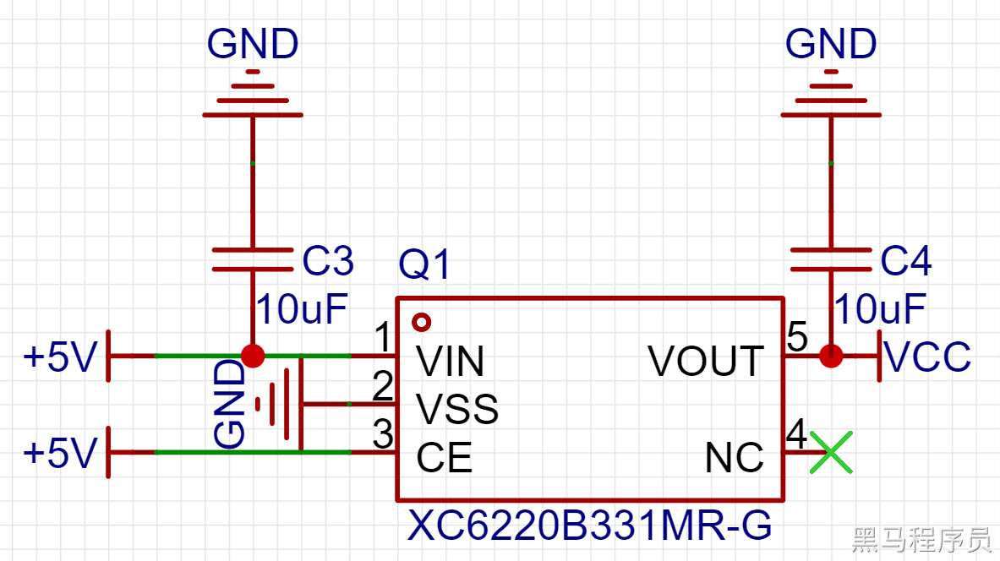</p><p data-lake-id="ubb8699bb" id="ubb8699bb"><span data-lake-id="u8b6e62e6" id="u8b6e62e6">常见型号:</span></p><ul list="uca6fba5b"><li data-lake-id="ubca43e16" fid="ue1393cd8" id="ubca43e16"><span data-lake-id="u539f5800" id="u539f5800">1117系列：AMS1117、TLV1117、NCP1117、LD1117、ME1117  输出电流较大 &gt; 200mA</span></li><li data-lake-id="u86edc768" fid="ue1393cd8" id="u86edc768"><strong><span data-lake-id="uacbc7f02" id="uacbc7f02">国产性价比</span></strong></li></ul><ul data-lake-indent="1" list="uca6fba5b"><li data-lake-id="u96242d75" fid="ue1393cd8" id="u96242d75"><strong><span data-lake-id="u8933cf61" id="u8933cf61">XC6220 , ME6206, ME6211</span></strong><span data-lake-id="uddf2797a" id="uddf2797a">, CJ78L05, SC662K </span></li><li data-lake-id="uccc0d861" fid="ue1393cd8" id="uccc0d861"><span data-lake-id="ub4b5f7cd" id="ub4b5f7cd">RT9013-33GB ( 250mV @ 500mA  )</span></li><li data-lake-id="u66a2e615" fid="ue1393cd8" id="u66a2e615"><strong><span data-lake-id="u2347eb7e" id="u2347eb7e">RT9193  </span></strong><span data-lake-id="u23f95057" id="u23f95057">(220mV @ 300mA)</span></li><li data-lake-id="u1f365bbe" fid="ue1393cd8" id="u1f365bbe"><span data-lake-id="u7edd9555" id="u7edd9555">XC6206P332MR</span></li><li data-lake-id="u3ebaf89b" fid="ue1393cd8" id="u3ebaf89b"><span data-lake-id="u814ee1d3" id="u814ee1d3">HT7533-1</span></li><li data-lake-id="uc889aa4a" fid="ue1393cd8" id="uc889aa4a"><span data-lake-id="u44e38323" id="u44e38323">CJ78L05 (Vdrop = 1.7V)</span></li></ul><ul list="uca6fba5b" start="3"><li data-lake-id="u15e598d8" fid="ue1393cd8" id="u15e598d8"><span data-lake-id="uae0ba54b" id="uae0ba54b">进口：L7805CV，LM317LD13TR</span></li><li data-lake-id="u689982bf" fid="ue1393cd8" id="u689982bf"><span data-lake-id="uccaaa330" id="uccaaa330">低压差：</span></li></ul><ul data-lake-indent="1" list="uca6fba5b"><li data-lake-id="u1567acec" fid="ue1393cd8" id="u1567acec"><span data-lake-id="u74832903" id="u74832903">XC6220B331MR(低压差1000mA): Input 6V Max</span></li><li data-lake-id="u32ae6f71" fid="ue1393cd8" id="u32ae6f71"><span data-lake-id="u74cc849f" id="u74cc849f">RT9013-33GB (低压差500mA) : Input 5.5V Max</span></li><li data-lake-id="uc712ce99" fid="ue1393cd8" id="uc712ce99"><span data-lake-id="ue78feac9" id="ue78feac9">ME6210A33M3G (低压差500mA): Input 18V Max</span></li><li data-lake-id="ub8ef4b31" fid="ue1393cd8" id="ub8ef4b31"><span data-lake-id="ue6462cf3" id="ue6462cf3">XC6206P332MR(低压差200mA)</span></li><li data-lake-id="ue94620b4" fid="ue1393cd8" id="ue94620b4"><span data-lake-id="uc47c382d" id="uc47c382d">HT7533-1 (低压差100mA)</span></li></ul><h3 data-lake-id="PKvg8" id="PKvg8"><br/></h3><h3 data-lake-id="mj23D" id="mj23D"><span data-lake-id="u7cab4ee2" id="u7cab4ee2">电压基准芯片</span></h3><p data-lake-id="u17e65db0" id="u17e65db0"><span data-lake-id="u437d924c" id="u437d924c">电压基准芯片是一种电子元器件，用于提供稳定的电压基准。它通常用于需要精确电压参考的电路中，例如模拟信号处理、精密测量和校准等领域。</span></p><p data-lake-id="u709db577" id="u709db577"><span data-lake-id="ue4ad61d9" id="ue4ad61d9">电压基准芯片通常由一个高稳定性的参考源和一组放大器、滤波器和反馈电路组成，以提供一个具有非常低漂移和噪声的电压输出。电压基准芯片的输出电压通常是固定的，并且可以在几个微伏到几个伏之间进行选择。</span></p><p data-lake-id="ue8b1d311" id="ue8b1d311"><span data-lake-id="ucccb7598" id="ucccb7598">电压基准芯片的使用可以大大提高电路的稳定性和精度，从而提高整个系统的性能和可靠性。</span></p><p data-lake-id="u55fdea67" id="u55fdea67">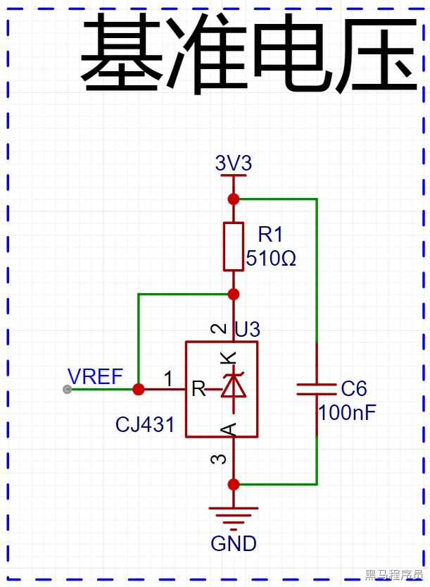</p><p data-lake-id="u04a6f931" id="u04a6f931"><br/></p><h3 data-lake-id="a5ot6" id="a5ot6"><span data-lake-id="ubd94482c" id="ubd94482c">串口和HID切换</span></h3><p data-lake-id="u10ed63ab" id="u10ed63ab"><span data-lake-id="u4214172d" id="u4214172d">我们有两种模式进行固件下载烧录：</span></p><ol list="ue45798aa"><li data-lake-id="u1e18b06b" fid="ucab6dd52" id="u1e18b06b"><span data-lake-id="ue328b744" id="ue328b744">使用串口烧录（连接D+、D-通过串口芯片输出TXD、RXD连接芯片引脚）</span></li><li data-lake-id="u8e280baf" fid="ucab6dd52" id="u8e280baf"><span data-lake-id="u0aa7fb29" id="u0aa7fb29">使用USB直接下载 （直连芯片 P31_TXD_D+, P30_RXD_D-引脚）</span></li></ol><p data-lake-id="ud10866e7" id="ud10866e7"><span data-lake-id="u93312591" id="u93312591">可以根据需要切换两种模式，因为有两个引脚要进行同时切换，所以我们选用</span><strong><span data-lake-id="uddf4a160" id="uddf4a160">双刀双掷</span></strong><span data-lake-id="u8d68eec8" id="u8d68eec8">开关：</span></p><p data-lake-id="ufaa4c10f" id="ufaa4c10f"><span data-lake-id="u5323718b" id="u5323718b">把USB_D+和USB_D-放中间：</span></p><p data-lake-id="u8cf598e8" id="u8cf598e8">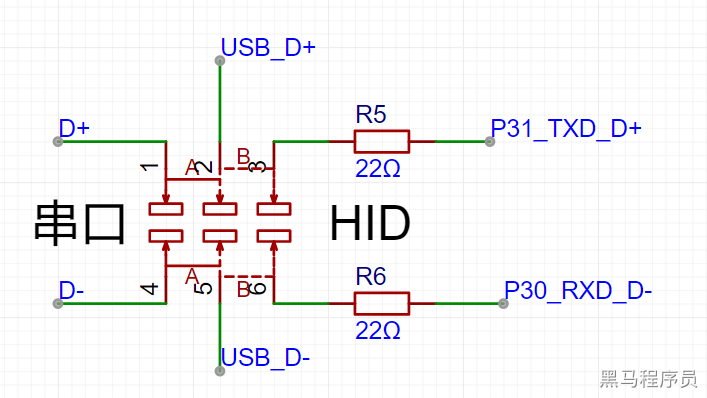</p><p data-lake-id="uf6c8c125" id="uf6c8c125">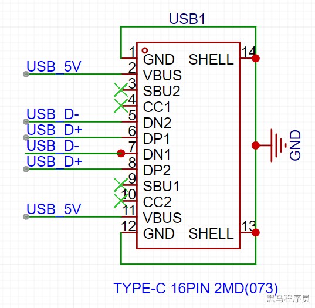</p><h3 data-lake-id="hLJHJ" id="hLJHJ"><span data-lake-id="u67ed7a12" id="u67ed7a12">思考：</span></h3><p data-lake-id="uc3b109f9" id="uc3b109f9"><span data-lake-id="uea5a40b1" id="uea5a40b1">为什么串口芯片的TXD接二极管的阴极，MCU的RX接二极管的阳极。可以保护MCU，却不影响数据传输呢？</span></p><p data-lake-id="u749eafa3" id="u749eafa3"><span data-lake-id="u099b1f4b" id="u099b1f4b">​</span><br/></p><details class="lake-collapse" data-lake-id="ub4db3bbb" id="ub4db3bbb" open="false"><summary class="lake-summary" data-lake-id="u81e46a02" id="u81e46a02"><span data-lake-id="u28513797" id="u28513797">答案：请先思考后再查看</span></summary><p data-lake-id="u63cbf53a" id="u63cbf53a"><span class="lake-fontsize-11" data-lake-id="uf0b7cf0d" id="uf0b7cf0d" style="color: rgb(51, 51, 51)">单片机下载程序时需要冷启动，即先点击下载后上电，由于TXD是输出引脚，如果没有此二极管，就会有电流通过这个引脚流入单片机，影响单片机的冷启动。</span></p><p data-lake-id="ud50ceecd" id="ud50ceecd"><span class="lake-fontsize-11" data-lake-id="u3c17e894" id="u3c17e894" style="color: rgb(51, 51, 51)">那数据传输时是否会影响呢？并不会：</span></p><ul list="u4d1b1db1"><li data-lake-id="uee39e201" fid="u5791e018" id="uee39e201"><span class="lake-fontsize-11" data-lake-id="u634293d7" id="u634293d7" style="color: rgb(51, 51, 51)">当串口芯片（CH340）</span><strong><span class="lake-fontsize-11" data-lake-id="u4bbb0a4f" id="u4bbb0a4f" style="color: rgb(51, 51, 51)">输出高电平</span></strong><span class="lake-fontsize-11" data-lake-id="u1338ca74" id="u1338ca74" style="color: rgb(51, 51, 51)">时，二极管截止，由于单片机RX引脚带内部上拉，此时RX收到</span><strong><span class="lake-fontsize-11" data-lake-id="ub47c7251" id="ub47c7251" style="color: rgb(51, 51, 51)">高电平</span></strong></li><li data-lake-id="u91d0da79" fid="u5791e018" id="u91d0da79"><span class="lake-fontsize-11" data-lake-id="u3b18004d" id="u3b18004d" style="color: rgb(51, 51, 51)">当串口芯片（CH340）</span><strong><span class="lake-fontsize-11" data-lake-id="u89ec6a37" id="u89ec6a37" style="color: rgb(51, 51, 51)">输出低电平</span></strong><span class="lake-fontsize-11" data-lake-id="ua6b2870a" id="ua6b2870a" style="color: rgb(51, 51, 51)">时，二极管导通，单片机RX引脚被拉低，此时RX收到</span><strong><span class="lake-fontsize-11" data-lake-id="ud3a77085" id="ud3a77085" style="color: rgb(51, 51, 51)">低电平</span></strong></li><li data-lake-id="ub04b8f38" fid="u5791e018" id="ub04b8f38"><span class="lake-fontsize-11" data-lake-id="u03268611" id="u03268611" style="color: rgb(51, 51, 51)">因此串口芯片输出高低电平时，单片机RX引脚同样能接收到高低电平，不影响数据传输。</span></li></ul></details><p data-lake-id="u3cbe31be" id="u3cbe31be"><br/></p><p data-lake-id="u04dcda13" id="u04dcda13"><strong><span data-lake-id="u06cbac94" id="u06cbac94">单位换算：</span></strong></p><p data-lake-id="u28655682" id="u28655682"><span data-lake-id="u55b9960a" id="u55b9960a">100mil -&gt; 2.54mm</span></p><p data-lake-id="u4360d8d5" id="u4360d8d5"><span data-lake-id="u36c40539" id="u36c40539">10mil -&gt; 0.254mm</span></p><p data-lake-id="uc07b0c77" id="uc07b0c77"><span data-lake-id="u418687f7" id="u418687f7">1mil -&gt; 0.0254mm</span></p><h2 data-lake-id="L8wzB" id="L8wzB"><span data-lake-id="u3a8cb659" id="u3a8cb659">练习题</span></h2><ul list="u8f0e6c70"><li data-lake-id="ua2e27c3c" fid="u4a50acfa" id="ua2e27c3c"><span data-lake-id="u4ec347ca" id="u4ec347ca">设计一个STC8H的核心板</span></li><li data-lake-id="u48ae9840" fid="u4a50acfa" id="u48ae9840"><span data-lake-id="ub850d39e" id="ub850d39e">设计一个小闹钟+烧录器</span></li><li data-lake-id="u68bc8ddf" fid="u4a50acfa" id="u68bc8ddf"><span data-lake-id="uf4790435" id="uf4790435">设计小车驱动板</span></li></ul>